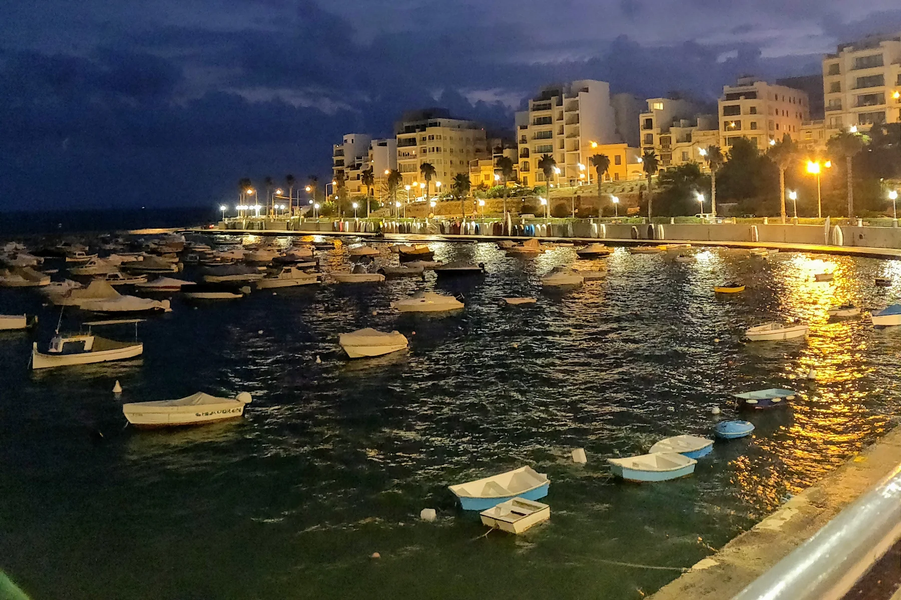

Confirm the building's orientation, entrance, gradients and evening conditions. A harbour-facing street does not establish a harbour view.
ST PAUL'S BAY · READ THE HARBOUR
Old town first. Then the exact street.
Separate the parish and Gillieru harbour-facing streets, the inland roads towards Mosta Road and the neighbouring Buġibba, Qawra and Xemxija contexts before comparing homes.

ONE COUNCIL, SEVERAL NAMED PLACES
The council boundary is wider than the town.
The Local Council lists Buġibba, Qawra, Xemxija, Burmarrad and other named areas inside its territory. A listing labelled St Paul's Bay therefore needs a verified street and entrance before its everyday context can be described.
Streets towards Mosta Road need their own grocery, crossing, shade and return-route check from the exact building.
Buġibba, Qawra, Xemxija and Burmarrad share one council but remain distinct property contexts. Qawra has its own 2906 edition.
Atmosphere, never a property promise.
The licensed 2020 photograph shows the wider harbour edge, small craft and the surrounding built fabric in low light. It does not prove today's appearance, noise, parking, water access or a view from a listing.
Local Council geography ↗The old town has its own anchors.
The council places the Parish of Our Lady of Sorrows in St Paul's Bay and separately assigns heritage places to Qawra, Buġibba, Salina and Burmarrad. Current opening and access still require an operator check.
Council historical places ↗VERIFIED EVERYDAY EXAMPLES
Daily anchors around the town and harbour.
These examples establish practical and social context. They are not rankings and do not claim that a service or venue is closest to every property. Check current access, hours, stock and prices directly.
SPAR St Paul's Bay
The operator lists its St Paul's Bay store on Triq San Pawl. The exact route still depends on the property entrance.
SPAR store locator ↗Servizz.gov hub
A November 2023 government release records a St Paul's Bay hub next to the parish church. Current services and opening arrangements must be checked directly.
Government announcement ↗Tide Bistro
The operator gives its address as 66 Church Street and describes a seaside bistro rooted in the historic Gillieru setting.
Tide operator page ↗Gillieru Kafé
The operator places the café by Gillieru Harbour and St Paul's Shipwreck Church. This is a sourced example, not a dining ranking.
Gillieru Kafé operator page ↗No line across the bay.
This edition draws no district boundary, water shortcut, ferry line or walking route. Walking geometry, bus timetables, current car traffic and taxi-price observations are separate sources and require the exact origin, destination, mode and observation time.
Open the town and harbour map only when you need it.
The overview includes the old town, parish and harbour-facing streets, inland roads and neighbouring labels for orientation. It deliberately draws no neighbourhood boundary, route or journey time and loads from OpenStreetMap only after your click.
San Pawl il-Baħar Local Council geography · Council historical places · Office of the Address Registrar · Primary HealthCare · SPAR Malta · Tide Bistro · Gillieru Kafé · Servizz.gov announcement
Primary HealthCare currently assigns St Paul's Bay to Mosta Health Centre. Service availability remains a current-check item. No ranking, fixed opening hours, property-specific route, accessibility promise, guaranteed view, parking claim or locality-wide journey time is claimed.